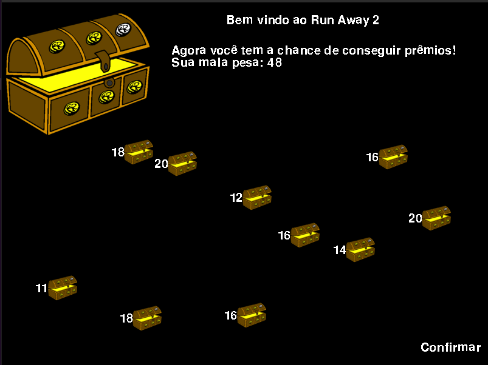
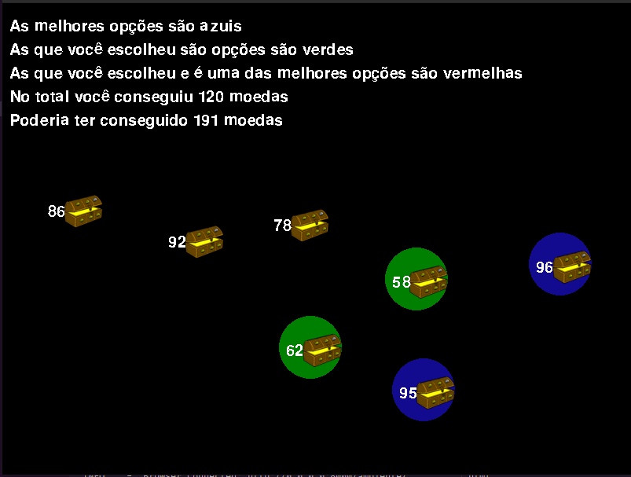
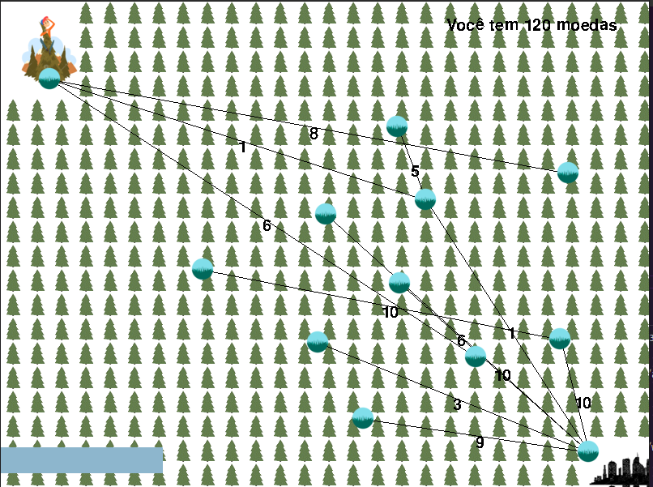

Run away 2
O que é o nosso projeto?
É um jogo, onde jogador deve escolher os melhores tesouros para obter a maior quantidade de moedas, então ele deve adivinhar o caminho mais curto para fora da floresta para não perder as moedas.
Membros:
| Nome | Github | Matrícula |
|---|---|---|
| Kathlyn Lara Murussi | @klmurussi | 18/0042378 |
| Júlio César Schneider Martins | @jschneiderm98 | 16/0032903 |
Screenshots:
Seleção de báus

Báus selecionados

Parte da fuga da floresta

Vídeo da dupla